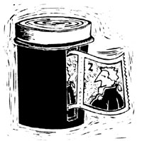
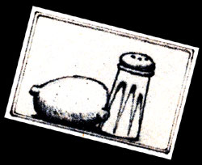

Country Lore
Mel Borden shares a recipe for home cold and cough soother; Julie Normand uses a grocery bag as a mitten to arrange wood in her stove and start the fire; Mrs. Doug Hugar freezes milk in cubes for coffee; Leon Jones uses instant coffee to clean car batteries; Jill Whalen puts plastic bags over her children's shoes to get the rubbers on easier and keep their feet drier; Georgiana Kotarski sprinkles salt on a cut lemon and uses that to remove tarnish; Bob Hamer turns plastic film containers into a handy stamp dispenser; Dave Barr cleans fireplace bricks with a vinegar, borax and ammonia mixture; Judi Rothkopf keeps snow in the freezer for efficiency.
By the Mother Earth News editors
January/February 1986
Folks, Facts & Folklore
Throat Soother
My mother used to make up this home remedy every winter, and while it won't cure a cold, it sure will soothe a raw throat and help control coughing. Take a tall drinking glass and put a 1" layer of chopped white onion in it. Cover that with about 1/4" of sugar and then continue to add layers of onion and sugar until the glass is packed tight ly full. Set an old cereal bowl upside down on top of the glass, and then carefully turn the whole thing over so the glass is sitting upside down in the bowl. Put this on a stove top that's hot enough to cause the onion to simmer and dissolve the sugar. The warm liquid will run down the inside of the glass and into the bowl where it can be spooned up easily.- Mel Borden, Sacramento, California
Stamp Dispenser
I came up with a handy use for those plastic 35mm film canisters. I use a sharp knife or razor blade to cut a 1/8"-wide slot from the top of the container to within 1/4" of its bottom. Then I just place a roll of stamps inside, with one end sticking out of the slot, and snap the lid on. This makes a dispenser that keeps my stamps both neat and dry. - Bob Hamer, Fresno, California
Bricks Fix
To get the bricks of your fireplace clean, use a mixture of equal parts vinegar, borax, and ammonia. It'll remove stains and leave the bricks sparkling.- DaveBarr, Cheney, Washington
Copper Cleaner
To polish copper without harsh (and expensive!) chemicals, simply sprinkle salt on a cut lemon-even one that's had the juice squeezed out of it will work-and use it as a scrubber. I've found it does a great job of fading any tarnish. - Georgiana Kotarski, Flintstone, Georgia
Snow Job
A full freezer is a more efficient freezer, right? But what do you do when your winter stockpile starts to dwindle and the empty spaces start expanding? Well, last winter I filled the spare space with bread bags full of light, powdery snow. When summer-and zucchini, and tomatoes, and peas, etc.-came, I needed the freezer space again, so I took the bags out and let all the kids on the block have a snowball fight. The snow had kept its dryness and made for a safe and hilarious way to cool off on a hot summer day.- Judi Rothkopf, Moline, Illinois
Disposable Stove Mitt
It used to be that when I'd go to start up a cold woodstove, I'd often have a firebox half full of the charred remains of the last fire, and trying to rearrange the blackened mess would leave my hand and arm filthy. Then I hit on the idea of using a paper grocery bag as a giant mitten. I simply stick my hand in the bag and then reach in to arrange the wood. When I'm finished, I slip my (clean!) hand out and leave the paper bag to help start the fire!- Julie Normand, Centralia, Washington
In the Bag
Trying to pull rubber boots over children's shoes has got to be one of the most frustrating tasks of winter! But you'll find that if you put a plastic bag over their shoes first (bread bags are the perfect size for this), the boots will slip right on, and their shoes will stay drier, too!- Jill Whalen, Waukesha, Wisconsin
Ice Milk
My husband and I both take milk in our coffee, but there inevitably would be mornings when we'd run out and have to resort to using nondairy creamer. Then I solved the problem by keeping an ice cube tray full of milk in the freezer. Now, even if the milk in the fridge has been used up or gone sour, there are always a few cubes for our coffee.- Mrs. Doug Hugar, Inverness, Florida
Battery Brew
I'm sure most readers have heard of using baking soda to clean car batteries, but I've discovered an even quicker and better cleaner: instant coffee! Just make an extrastrong cup, then remove the cables from the battery and submerge the ends in the coffee-they'll look like new in no time! Coffee also does a good job of dissolving the corrosion that builds up around the battery termi nals- Leon hones, Bonners Ferry, Idaho
Through the years we've all probably discovered a few practical, down-home, timetested solutions to the frustrating little problems of everyday life. Why not share your best "horse sense" with the rest of MOTHER'S readers? Send your suggestions to Country Lore, THE Mother Earth News, P.O. Box 70, Hendersonville, NC 28793. A one year subscription-or a one year extension of an existing subscription-will be sent to each contributor whose tip is printed in this column. - MOTHER.
|
|
|
 |
|
 |
|
|
 |
|
|